Zero-party data là gì và khác first-party data thế nào?
Zero-party data là dữ liệu khách hàng chủ động, có ý thức chia sẻ với thương hiệu, như nhu cầu, sở thích hoặc cách họ muốn nhận thông tin. First-party data là dữ liệu doanh nghiệp thu trực tiếp từ quan hệ và tương tác với khách hàng. Tôi là Lê Tuấn Việt, Marketing Leader tại TAKI Group, đã cố vấn hệ thống đo lường và báo cáo cho hơn 200 doanh nghiệp SME. Bài viết này phân biệt bốn loại dữ liệu khách hàng bằng hai câu hỏi đơn giản; đính chính hiện trạng cookie bên thứ ba; đưa số liệu tỷ lệ đồng ý khi được hỏi; và liệt kê năm thiên lệch có tên của dữ liệu tự khai.
- Đăng ngày
- Cập nhật

Tóm tắt nhanh
- Zero-party data là điều khách chủ động khai báo, first-party data là điều hệ thống ghi nhận hành vi; phân biệt hai loại bằng cách hỏi dữ liệu đến từ đâu và hình thành thế nào.
- Google đã giữ nguyên cookie bên thứ ba trong Chrome từ tháng 4 năm 2025, nên lý do cookie sắp biến mất không còn là căn cứ hợp lệ để thúc một dự án dữ liệu.
- Dữ liệu tự khai không tự bảo đảm chính xác: nghiên cứu của Polonioli nêu năm thiên lệch có tên khiến câu trả lời sai lệch có hệ thống.
- Trước khi dùng một trường dữ liệu, hãy chạy năm câu hỏi kiểm tra theo thứ tự: loại bằng chứng, đúng người, còn hiện thời, đủ ngữ cảnh, đúng mục đích.
Mục lục bài viết11 phần
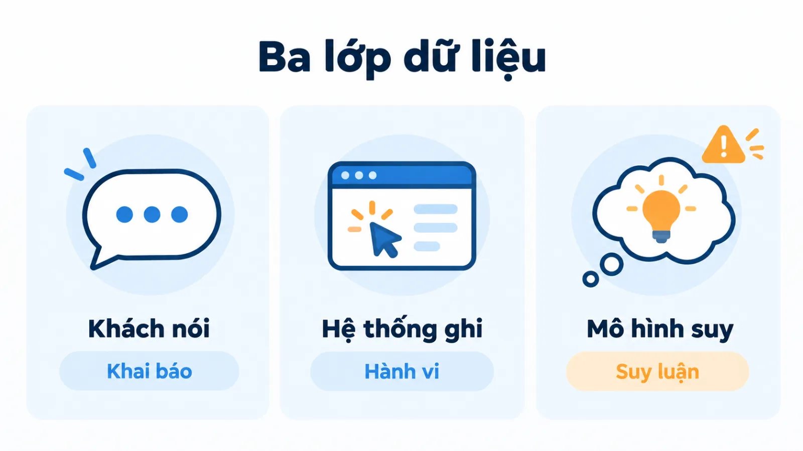
Zero-party data và first-party data là gì?
Forrester định nghĩa zero-party data theo sự chủ động chia sẻ của khách hàng. Điểm quan trọng là ý định cung cấp: người dùng nói điều họ muốn thương hiệu biết, thay vì thương hiệu suy từ một lần xem trang.
First-party data trả lời một câu hỏi khác: dữ liệu có được thu từ tương tác trực tiếp với doanh nghiệp không? Twilio Segment nêu các ví dụ first-party như trang sản phẩm đã xem và giao dịch đã thực hiện. Một cửa hàng ghi nhận đơn hàng của mình đang có dữ liệu trực tiếp; mua một danh sách người dùng bên ngoài là tình huống khác.
Hai khái niệm còn lại cần được định nghĩa để bức tranh đủ. Second-party data là first-party data của một doanh nghiệp khác, được chia sẻ hoặc trao đổi theo thỏa thuận giữa hai bên. Third-party data là dữ liệu do bên trung gian tổng hợp từ nhiều nguồn rồi bán lại, và doanh nghiệp mua thường không có quan hệ trực tiếp với người trong tập dữ liệu đó.
Dữ liệu suy luận: loại thứ năm
Còn một loại thứ năm mà nhiều tài liệu bỏ qua nhưng lại chiếm phần lớn thực tế vận hành: dữ liệu suy luận. Đây không phải điều khách nói cũng không phải điều hệ thống ghi nhận, mà là kết luận do người phân tích hoặc mô hình rút ra từ hai loại kia.
Điểm khách mua tiềm năng, nhãn phân khúc, dự đoán khả năng rời bỏ đều thuộc nhóm này. Tách nó ra là việc quan trọng nhất trong cả bài, vì phần lớn sai sót cá nhân hóa xảy ra khi một suy luận được trình bày như một lời khách đã nói.
Khi kết luận do mô hình AI đưa ra, hãy coi đó là giả thuyết cần kiểm tra chứ không phải dữ kiện, vì mô hình có thể tạo ra thông tin nghe hợp lý nhưng sai, như bài Ảo giác AI là gì phân tích.
| Loại dữ liệu | Nguồn gốc | Cách hình thành | Ví dụ trong cửa hàng đồ dã ngoại |
|---|---|---|---|
| Zero-party | Trực tiếp | Khách khai báo | Khách chọn "tôi thường đi trong ngày" |
| First-party | Trực tiếp | Hệ thống ghi nhận | Đã xem ba lô 65 lít, đã mua giày leo núi |
| Second-party | Đối tác | First-party của họ | Dữ liệu khách chung được một thương hiệu đối tác chia sẻ |
| Third-party | Bên trung gian | Tổng hợp rồi bán lại | Danh sách người thích hoạt động ngoài trời, mua từ nhà cung cấp |
| Dữ liệu suy luận | Tự sinh | Người hoặc mô hình | Nhãn "quan tâm dã ngoại cao cấp", điểm khách tiềm năng |
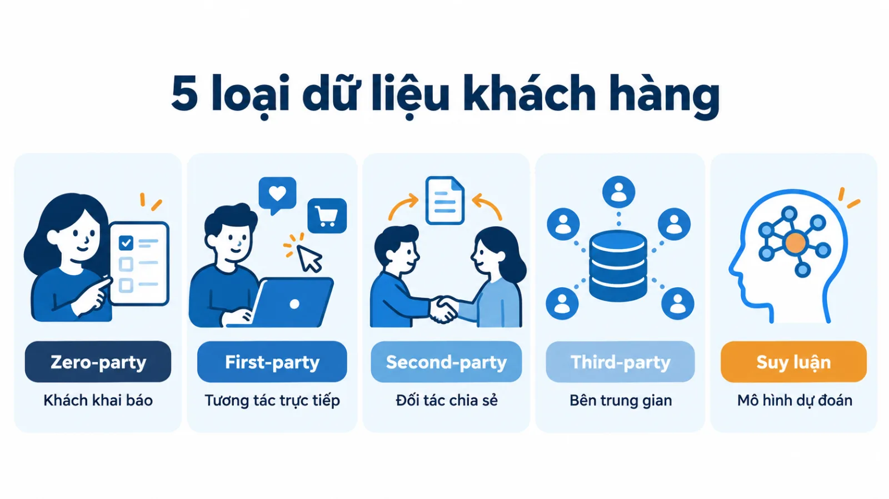
Phân biệt bốn loại dữ liệu bằng hai câu hỏi nào?
Dùng đúng hai câu hỏi, theo thứ tự. Câu thứ nhất: dữ liệu này đến từ đâu, từ quan hệ trực tiếp của doanh nghiệp với khách hay từ một bên ngoài? Câu thứ hai: dữ liệu này hình thành thế nào, do khách chủ động khai báo hay do hệ thống ghi nhận hành động?
Câu thứ nhất tách trực tiếp khỏi gián tiếp. Câu thứ hai tách khai báo khỏi hành vi. Hai câu hỏi này độc lập với nhau, nên đặt chúng thành hai trục sẽ được một ma trận bốn ô, và mỗi loại dữ liệu có một chỗ ngồi rõ ràng.
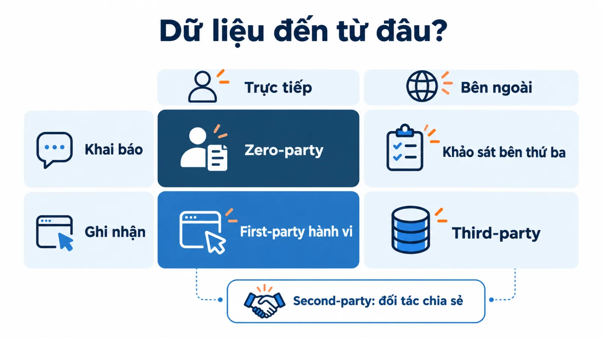
Cách phân loại này giải thích vì sao zero-party data và first-party data hay bị lẫn. Cả hai đều nằm ở nửa trực tiếp của trục thứ nhất. Chúng chỉ khác nhau ở trục thứ hai. Vì vậy, nếu doanh nghiệp dùng first-party theo nghĩa rộng là mọi dữ liệu từ nguồn trực tiếp, zero-party data nằm gọn bên trong first-party data chứ không đối lập với nó.
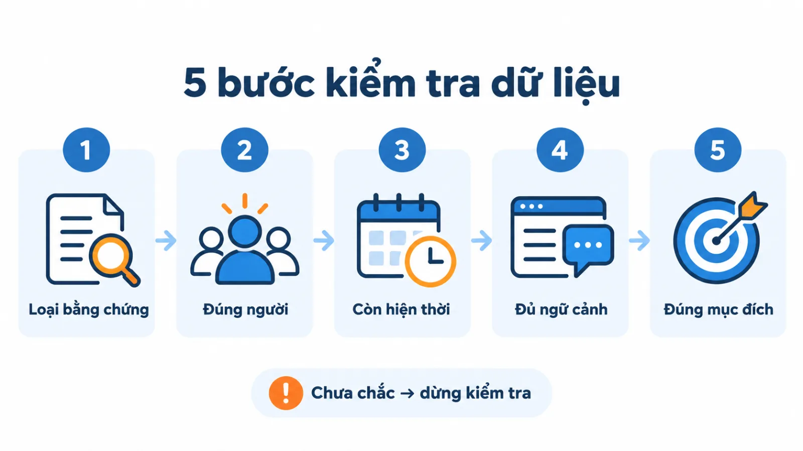
Đây là cách phân biệt first party data khác zero party data trong vận hành, không phải thang xếp hạng loại nào luôn tốt hơn. Dữ liệu mua hàng có thể chính xác về giao dịch nhưng không nói người mua dùng cho mình hay tặng người khác. Câu trả lời khảo sát có thể nêu mục đích, nhưng vẫn có thể thiếu hoặc thay đổi.
Vì sao lý do "cookie sắp biến mất" không còn đúng?
Phần lớn tài liệu về zero-party data mở đầu bằng một lập luận: cookie bên thứ ba sắp bị Chrome loại bỏ, nên doanh nghiệp phải gấp rút xây dữ liệu của riêng mình. Lập luận đó đã hết hiệu lực, và nếu đội marketing của bạn vẫn đang dùng nó để xin ngân sách thì cần cập nhật.
Google đã công bố gì về cookie?
Google công bố ngày 22 tháng 7 năm 2024 rằng thay vì loại bỏ cookie bên thứ ba, họ sẽ giới thiệu một trải nghiệm mới trong Chrome để người dùng tự đưa ra lựa chọn có hiểu biết và có thể điều chỉnh lựa chọn đó bất cứ lúc nào.
Đến ngày 22 tháng 4 năm 2025, Google đi thêm một bước và cho biết họ quyết định giữ nguyên cách tiếp cận hiện tại về lựa chọn cookie bên thứ ba trong Chrome, đồng thời sẽ không triển khai lời nhắc riêng biệt như đã dự kiến.
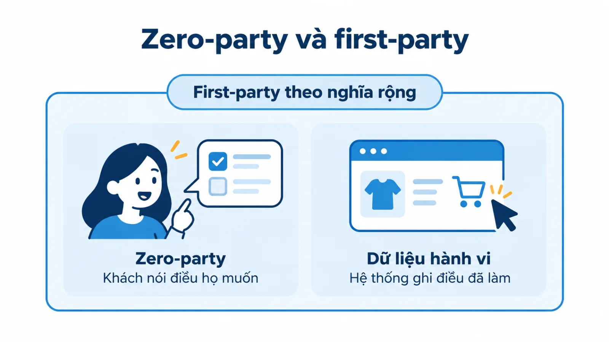
Điều này có nghĩa gì với một SME (doanh nghiệp vừa và nhỏ). Thứ nhất, sức ép về hạn chót kỹ thuật đã giảm, nên đừng dựng kế hoạch dữ liệu trên một hạn chót không còn tồn tại. Thứ hai, và quan trọng hơn, lý do thật sự để làm zero-party data chưa bao giờ nằm ở cookie. Nó nằm ở chỗ cookie và hành vi duyệt web không trả lời được câu hỏi vì sao khách làm điều họ làm.
Thứ ba, môi trường dữ liệu vẫn siết lại theo những hướng khác, chỉ là không theo cách mà mọi người dự đoán. Quy định về bảo vệ dữ liệu cá nhân, cơ chế xin phép trên thiết bị di động và kỳ vọng của chính khách hàng đều đang thay đổi. Lập luận đúng cho zero-party data là lập luận về chất lượng bằng chứng và về sự minh bạch, không phải về một tính năng trình duyệt.
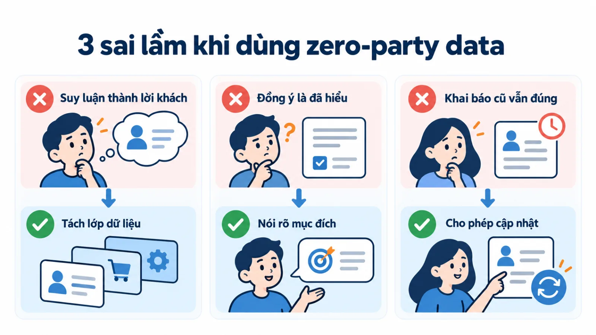
Khi hỏi thẳng để thu zero-party data, bao nhiêu người đồng ý?
Câu trả lời: khoảng một nửa, và tỷ lệ này cao hơn nhiều so với dự đoán của ngành khi cơ chế hỏi mới xuất hiện.
Tỷ lệ đồng ý theo cơ chế của Apple
Dữ liệu tham chiếu tốt nhất hiện có đến từ cơ chế App Tracking Transparency của Apple, nơi ứng dụng phải hỏi người dùng trước khi theo dõi. AppsFlyer công bố ngày 26 tháng 4 năm 2024 rằng trong quý 1 năm 2024, tỷ lệ đồng ý trên toàn cầu đạt 50%, tăng khoảng 10 điểm phần trăm so với thời điểm cơ chế này bắt đầu áp dụng năm 2021.
Tỷ lệ chênh lệch đáng kể theo thị trường: Pháp và Trung Quốc 53%, Đức 47%, Anh 46%, Mỹ 44%, Ba Lan 39%, Thụy Điển 31%.
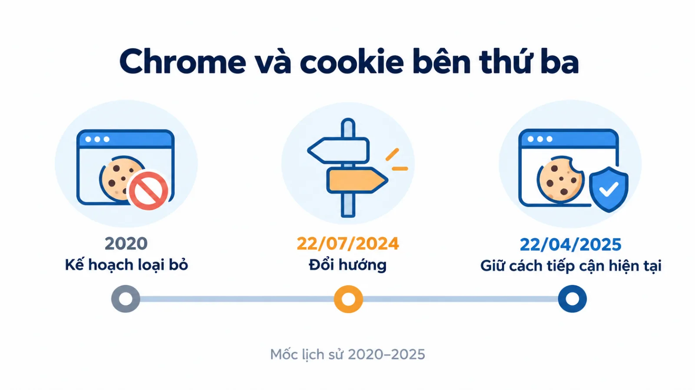
Bài học cho SME từ tỷ lệ đồng ý
Ba điều rút ra cho SME. Một, hỏi thẳng không làm khách bỏ đi như nhiều người lo; khoảng một nửa đồng ý.
Hai, con số này là tỷ lệ đồng ý cho việc theo dõi, tức việc khó xin nhất; hỏi khách về nhu cầu và sở thích để phục vụ họ tốt hơn thường dễ được chấp nhận hơn. Ba, khoảng cách giữa 31% và 53% cho thấy văn hóa thị trường ảnh hưởng mạnh, nên đừng mang một tỷ lệ chuẩn từ báo cáo nước ngoài về làm mục tiêu cho Việt Nam mà chưa tự đo.
Giới hạn của số liệu
Đây là dữ liệu từ một nền tảng đo lường trong môi trường ứng dụng di động, không phải khảo sát đại diện dân số, và cơ chế hỏi của Apple khác với một câu hỏi sở thích trên website. Con số này dùng để hiệu chỉnh kỳ vọng, không dùng làm dự báo cho doanh nghiệp bạn.
Vì sao một biểu mẫu có thể tạo ra cả ba lớp dữ liệu?
Một form đăng ký có thể chứa địa chỉ email, lựa chọn chủ đề muốn nhận và sự kiện gửi form. Bạn cần phân biệt nội dung khách khai báo với bản ghi hành động, ngay cả khi chúng xuất hiện cùng một thời điểm.
Lựa chọn "muốn nhận nội dung về dã ngoại trong ngày" là khai báo sở thích. Bản ghi "đã gửi form" là hành vi. Email là thông tin liên hệ do khách cung cấp trực tiếp; ý nghĩa vận hành của nó còn phụ thuộc mục đích form và cách doanh nghiệp mô tả việc sử dụng. Và ngay khi hệ thống gắn nhãn "khách quan tâm dã ngoại cao cấp" dựa trên hai trường trên, lớp thứ ba xuất hiện: dữ liệu suy luận.
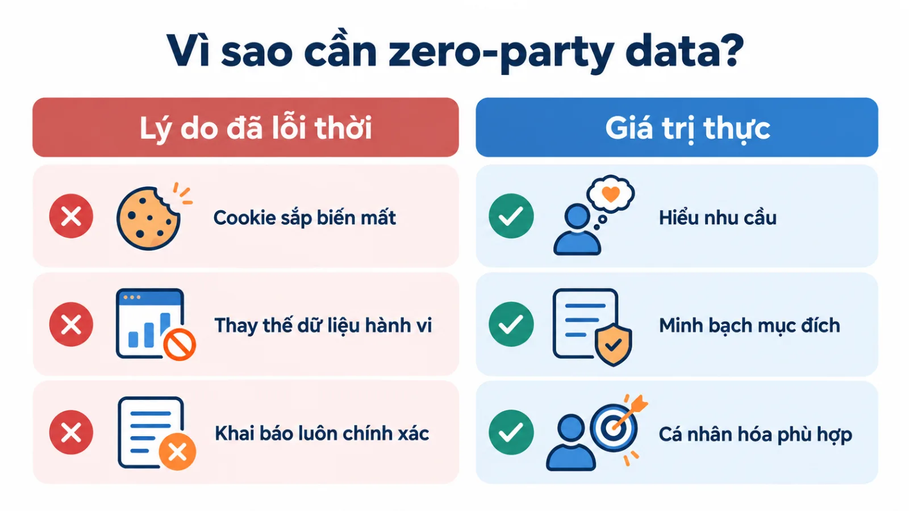
Do đó, đừng gán nhãn cho cả form rồi suy mọi trường đều có cùng ý nghĩa. Với cách dùng first-party rộng, cả nội dung khai báo và sự kiện gửi có thể là dữ liệu trực tiếp. Với cách tách lớp để phân tích, bạn nên lưu riêng khai báo, hành vi và phần suy luận, mỗi lớp một trường.
Bàn giao cho người làm nội dung
Sự phân biệt này quan trọng khi bàn giao cho người làm nội dung. Khách đã chọn chủ đề là căn cứ khác với mô hình dự đoán khách thích chủ đề. Cả hai có thể hữu ích, nhưng không nên được trình bày như cùng một lời khách đã nói. Một câu mở đầu email kiểu "vì bạn quan tâm tới dã ngoại cao cấp", viết dựa trên một nhãn suy luận, là cách nhanh nhất làm khách thấy thương hiệu đang đoán mò về họ.
Ví dụ: cửa hàng đồ dã ngoại đọc dữ liệu khách thế nào?
Xét một SME bán đồ dã ngoại và một khách đang tìm ba lô. Đây là tình huống giả định để giải thích dữ liệu, không phải hồ sơ khách hàng thật hay kết quả chiến dịch đã đo.
Đầu tiên, khách xem trang ba lô lớn. Cửa hàng có tín hiệu hành vi về lượt xem nếu hệ thống ghi nhận đúng. Từ đó có thể đặt giả thuyết rằng khách quan tâm sản phẩm, nhưng chưa đủ để biết họ định đi dài ngày hoặc sẵn sàng mua.
Sau đó, khách chủ động chọn "tôi thường đi trong ngày" trong phần hỏi nhu cầu. Đây là thông tin khai báo có thể giúp cửa hàng ưu tiên hướng dẫn chuẩn bị đồ cho chuyến ngắn. Nó cung cấp bối cảnh mà bản ghi xem trang không tự giải thích được.
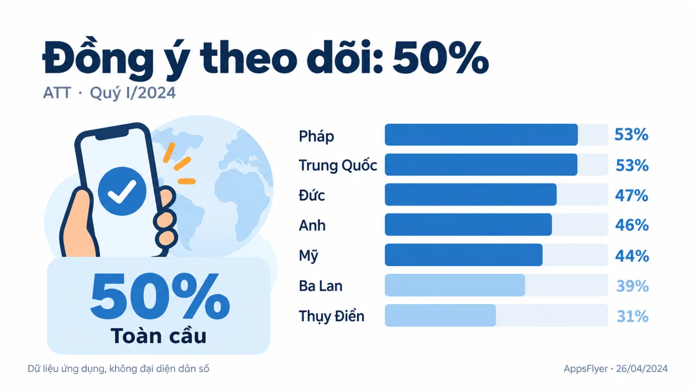
Khi hai tín hiệu trái nhau
Hai tín hiệu có vẻ khác nhau nhưng chưa phải mâu thuẫn. Ít nhất bốn cách giải thích đều hợp lý: khách đang so sánh dung tích trước khi chốt một chiếc nhỏ hơn; khách mua quà cho người khác; khách có một chuyến dài sắp tới nằm ngoài thói quen thường ngày; hoặc đơn giản là một người khác dùng chung thiết bị. Cửa hàng có thể hỏi thêm một câu hữu ích, thay vì kết luận khách khai sai hoặc tự đổi lựa chọn họ vừa cung cấp.
Nếu khách vừa gửi nhu cầu tư vấn, đội bán hàng cần xác nhận mục đích sử dụng trước khi đề xuất sản phẩm. Đọc tiếp Micro conversion là gì nếu bạn cần hiểu vì sao một hành vi nhỏ vẫn phải được đọc theo mục tiêu chính.
Phối hợp hai lớp dữ liệu cho cá nhân hóa có điều kiện
Hai lớp dữ liệu bổ sung nhau khi chúng thuộc đúng người và đúng bối cảnh. Khai báo giúp hiểu điều khách muốn; hành vi giúp kiểm tra tương tác gần đây. Phần suy luận kết hợp cần giữ mức chắc chắn phù hợp với bằng chứng. Với nguồn đến website, phần khách khai báo giúp thu hẹp khoảng trống mà báo cáo không ghi được, như bài Dark social là gì giải thích.
Với cửa hàng giả định, hệ thống có thể ưu tiên bài chuẩn bị cho chuyến đi trong ngày dựa trên lựa chọn đã khai báo. Nếu khách tiếp tục xem ba lô lớn, cửa hàng có thể cung cấp thêm bài so sánh dung tích thay vì tự xóa sở thích cũ.
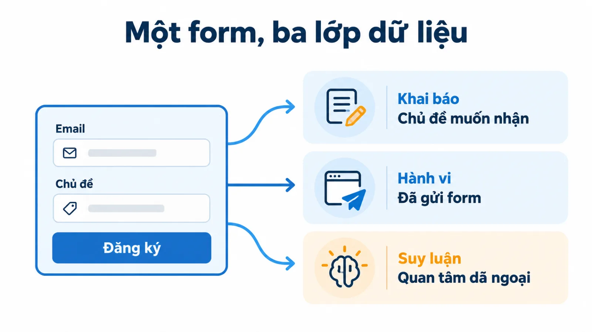
Một quy tắc đơn giản đã có thể làm việc này; không bắt buộc dùng AI. Khi dùng mô hình dự đoán, doanh nghiệp cần phân biệt đề xuất của mô hình với lựa chọn khách xác nhận. Khác biệt giữa quy tắc và mô hình được trình bày trong bài AI personalization là gì.
Không nên nối hai hồ sơ chỉ vì tên giống nhau hoặc một thiết bị có nhiều lượt xem. Nếu ghép nhầm người, dữ liệu khai báo tốt cũng có thể tạo trải nghiệm sai. Mỗi quyết định cá nhân hóa cần căn cứ nhận diện đủ tin cậy cho mục đích sử dụng. Nguyên tắc thực dụng: mức khẳng định trong thông điệp không được cao hơn mức chắc chắn của bằng chứng nhận diện.
Dữ liệu tự khai sai ở những chỗ nào?
Dữ liệu tự khai không tự bảo đảm chính xác. Andrea Polonioli, trong bài "Zero party data between hype and hope" đăng trên Frontiers in Big Data năm 2022, lập luận rằng giới thực hành đang bỏ qua những giới hạn đã được khoa học nhận thức ghi nhận từ lâu, và rằng việc khách hàng tự cung cấp không làm cho dữ liệu trở nên chính xác.
- Thiên lệch chọn giữa thang: Người trả lời tránh hai đầu mút và dồn về khoảng giữa, làm mất khả năng phân biệt.
- Thiên lệch mong muốn xã hội: Người trả lời chọn phương án tạo hình ảnh đẹp về mình thay vì phương án đúng.
- Sai số dự báo cảm xúc: Người ta dự đoán kém về sở thích tương lai của chính bản thân mình.
- Hiệu ứng tự đánh giá cao hơn mức trung bình: Khách tự xếp mình vào nhóm có năng lực cao hơn thực tế khi tự phân khúc.
- Trả lời cẩu thả: Câu hỏi mơ hồ, thuật ngữ lạ và thang đo dựng sai đều làm hỏng dữ liệu.
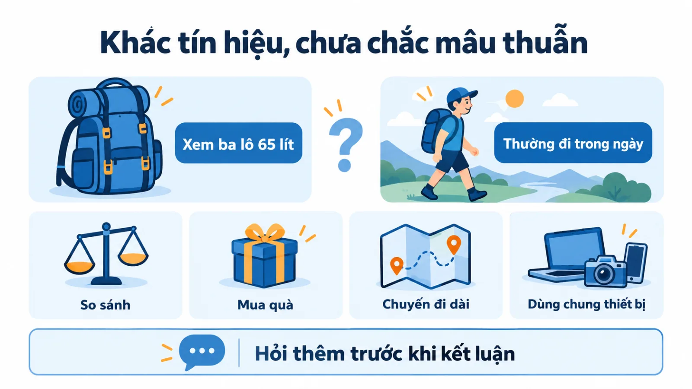
Polonioli còn nêu một điểm đáng chú ý về sự đồng ý: người dùng thường bấm đồng ý một cách tự động mà không xem xét hệ quả, coi các yêu cầu chia sẻ thông tin như một chướng ngại cần vượt qua hơn là một lựa chọn có ý nghĩa. Điều này không phủ nhận giá trị của zero-party data, nhưng nó bác bỏ giả định rằng cứ có sự đồng ý là có sự thấu hiểu.
Kết luận thực tế không phải là bỏ dữ liệu tự khai. Kết luận là đối xử với nó như một loại bằng chứng có sai số đã biết, giống cách bạn đối xử với dữ liệu hành vi. Câu hỏi ngắn, cụ thể, dùng từ của khách, tránh thang đo dài, và đặt đúng thời điểm khách có lý do trả lời thật sẽ giảm được phần lớn các sai số vừa nêu.
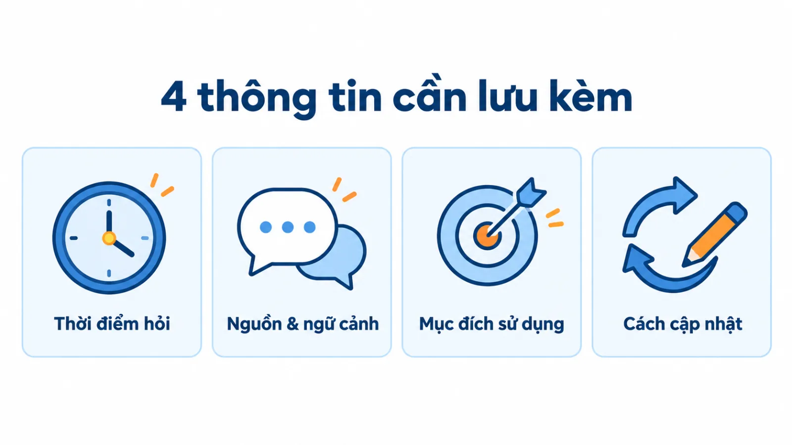
Kiểm tra một trường dữ liệu trước khi dùng như thế nào?
Chạy năm câu hỏi dưới đây theo thứ tự, dừng ở câu đầu tiên không có câu trả lời chắc chắn.
- 01Loại bằng chứng nào?Đây là điều khách đã nói, hệ thống đã ghi, hay đội marketing đang suy ra?
- 02Có đúng người không?Căn cứ nhận diện đã đủ tin cậy cho mục đích sử dụng này hay chưa?
- 03Còn hiện thời không?Khai báo này cách đây bao lâu và nhu cầu loại này thường đổi sau bao lâu?
- 04Đủ ngữ cảnh chưa?Khi hỏi, khách đang ở tình huống nào và câu hỏi có dẫn dắt không?
- 05Đúng mục đích chưa?Khách chia sẻ cho việc gì, và cách dùng lần này có nằm trong phạm vi đó không?
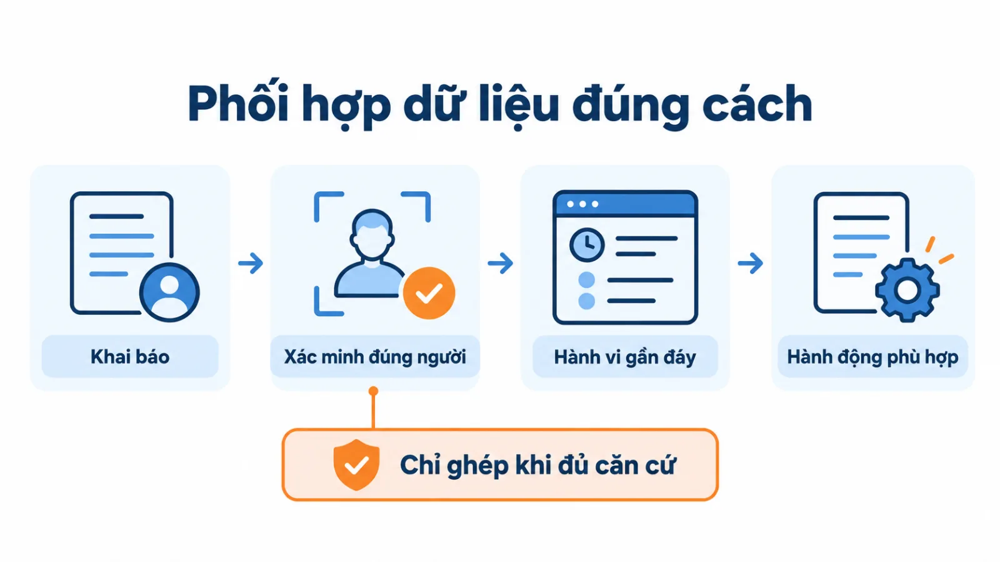
Một thực hành hợp lý là hỏi rõ mục đích, chỉ lấy phần cần để phục vụ và giữ lựa chọn liên hệ riêng với nhu cầu sản phẩm. Tên loại dữ liệu không thay thế việc kiểm tra quyền sử dụng và cách quản lý cụ thể.
Để năm câu hỏi trên trả lời được, bạn phải lưu sẵn bốn thứ bên cạnh mỗi câu trả lời của khách: thời điểm hỏi, nguồn và ngữ cảnh câu hỏi, mục đích sử dụng đã nêu với khách, và đường dẫn để khách tự cập nhật khi nhu cầu đổi. Thiếu bốn trường này, dữ liệu khai báo sẽ mất giá trị sau vài tháng mà không ai biết nó đã hỏng.
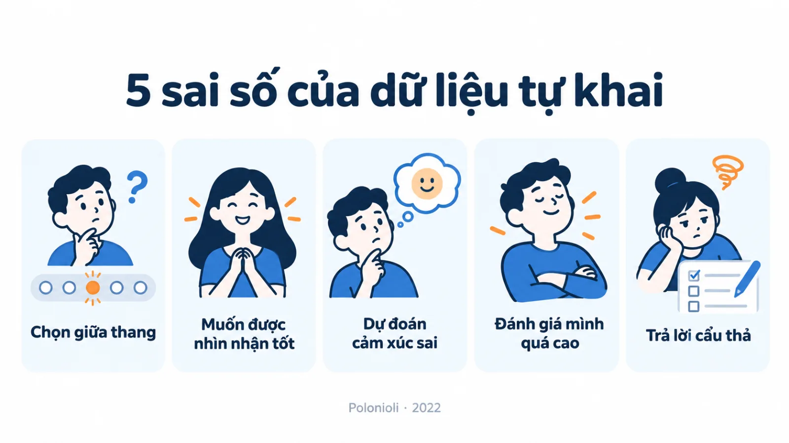
Một lưu ý về mẫu
Khi khảo sát chỉ có người thích ưu đãi tham gia, kết quả không mặc nhiên đại diện cho toàn bộ khách hàng. Ghi lại tỷ lệ trả lời và đặc điểm nhóm đã trả lời là cách rẻ nhất để biết dữ liệu của bạn đang lệch về phía nào.
Tôi ưu tiên dữ liệu đủ để quyết định một việc rõ, thay vì thu càng nhiều càng tốt. Bạn có thể đọc thêm các bài về đo lường và vận hành trong chủ đề Marketing của Góc kiến thức.
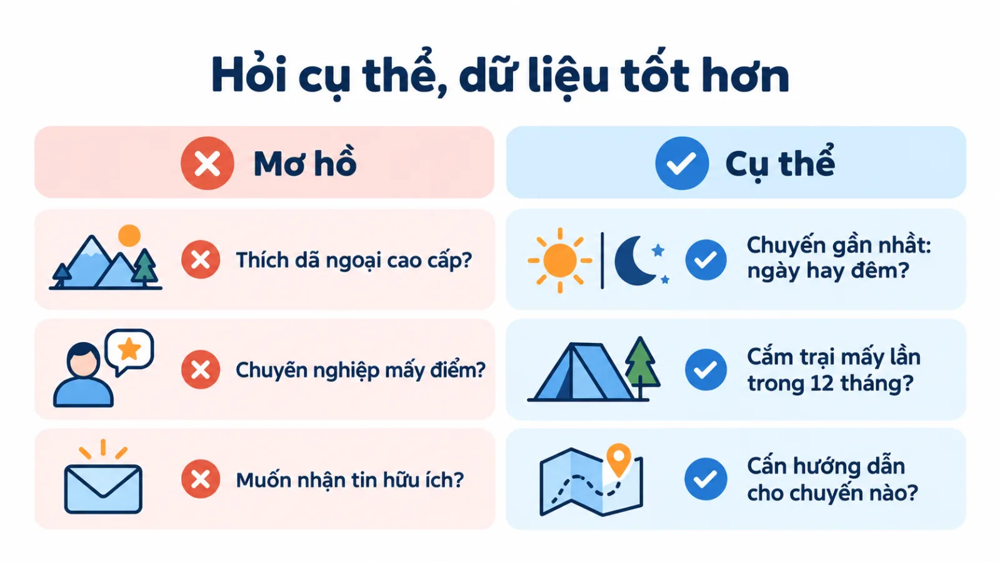
Câu hỏi thường gặp về zero-party data và first-party data
Zero-party data có luôn đáng tin hơn hành vi không?
Không. Khai báo giúp biết điều khách nói; hành vi giúp biết điều hệ thống ghi nhận. Độ tin cậy phụ thuộc câu hỏi, thời điểm, nhận diện và chất lượng đo của từng trường. Nghiên cứu của Polonioli liệt kê một loạt thiên lệch khiến dữ liệu tự khai sai lệch một cách có hệ thống.
Zero-party data có cần một nền tảng lớn không?
Không nhất thiết. Một câu hỏi có mục đích rõ và cách lưu lựa chọn nhất quán đã có thể tạo giá trị. Công cụ chỉ hữu ích khi doanh nghiệp biết sẽ dùng dữ liệu để quyết định gì.
Có thể thay mọi dữ liệu hành vi bằng khảo sát không?
Không. Khảo sát không tự cho biết giao dịch hoặc tương tác đã xảy ra. Phối hợp khai báo và hành vi giúp giải thích tốt hơn nếu giữ đúng nguồn, ngữ cảnh và giới hạn suy luận.
Cookie bên thứ ba còn tồn tại không?
Còn. Google công bố ngày 22 tháng 4 năm 2025 rằng họ giữ nguyên cách tiếp cận hiện tại về lựa chọn cookie bên thứ ba trong Chrome và không triển khai lời nhắc riêng biệt như dự kiến. Vì vậy, lập luận cookie sắp biến mất không còn là lý do hợp lệ để thúc một dự án dữ liệu.
Hỏi khách nhiều câu có làm giảm tỷ lệ hoàn thành không?
Thường là có, nên chỉ hỏi phần bạn sẽ dùng để quyết định một việc cụ thể. Một cách kiểm tra đơn giản: với mỗi câu hỏi trong form, viết ra hành động sẽ thay đổi dựa trên câu trả lời. Câu nào không viết được thì bỏ.
Kết luận
Trước khi dùng một trường dữ liệu, hãy hỏi: khách đã nói điều này, hệ thống đã ghi nhận hay đội marketing đang suy ra? Câu trả lời giúp bạn chọn cách cá nhân hóa và mức khẳng định phù hợp hơn.
Bài viết đã phân biệt năm loại dữ liệu khách hàng, đính chính hiện trạng cookie, đưa số liệu tỷ lệ đồng ý và liệt kê năm thiên lệch của dữ liệu tự khai. Nếu bạn muốn xem cách tôi xây hệ thống đo lường cho từng mô hình kinh doanh, phần năng lực chuyên môn trên trang hồ sơ có mô tả chi tiết hơn, và Góc kiến thức là nơi tôi lưu lại các bài phân tích cùng chủ đề.